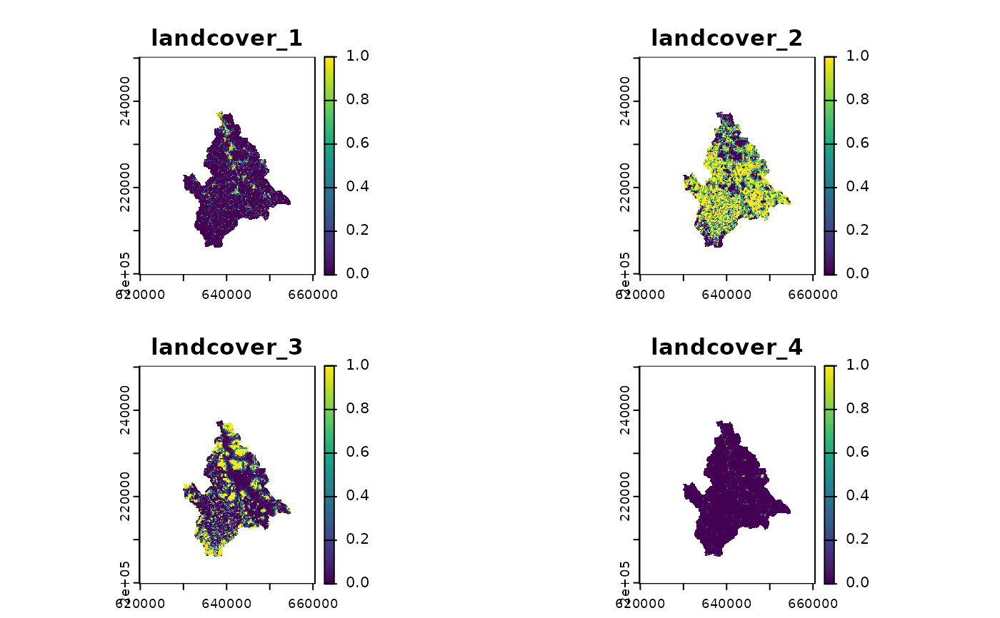

Compute upstream-averaged raster
rast_riverweight.RdCompute a raster file where each cell value is a weighted average of upstream values.
Usage
rast_riverweight(x, river,
categorical = TRUE,
weightNum = list(func = "exponential",
mode = "flow-based",
dist50 = 500,
stream = FALSE,
FA = FALSE),
weightDen = NULL)Arguments
- x
SpatRasterobject (obtained viaterra::rast) containing categorical or continuous variables from which upstream averages are computed. Its coordinate system must be the same ofriver. Consider usingterra::projectto change coordinate system.- river
A
riverobject generated viaaggregate_river.- categorical
Logical. Is the covariate categorical (e.g. land cover classes)? If
xconsists of several layers, it is possible to specifycategoricalas a vector of logicals (one per each layer); alternatively, the single value ofcategoricalis applied to all layers ofx.- weightNum
List defining attributes of the numerator of the weighted average. See details.
- weightDen
List defining attributes of the denominator of the weighted average. If
NULL, it is taken equal toweightNum. See details.
Details
Lists weightNum and weightDen can include arguments func, mode, stream, FA and one between dist50, distExponential, distCauchy, distLinear, expPower. If not all of these arguments are provided, default values for weightNum are used (see examples).
funcexpresses the type of distance decay function used. It must be equal to one among
"exponential","cauchy","linear","power". Only forweightDen, the value"unweighted"is also allowed. Distance decay functions are defined as follows:"exponential"\(w(d)=\exp(1-d/d_E)\)
"cauchy"\(w(d)=d_C^2/(d^2 + d_C^2)\)
"linear"\(w(d)=\max(1-d/d_L, 0)\)
"power"\(w(d)=1/(1+d)^{e_P}\)
"unweighted"\(w(d)=1\)
where \(w\) is the weight of a given source cell, \(d\) the distance (see
mode) from the source to the target cell, \(d_E\), \(d_C\), \(d_L\) and \(e_P\) are parameters.modeexpresses the way upstream distances are computed. It must be equal to one between
"flow-based"(distances computed along steepest descent paths) and"euclidean"(i.e., distances as the crow flies).dist50,distExponential,distCauchy,distLinear,expPowerParameters for the distance decay function expressed in
func. Parameterdist50is the distance at which \(w = 0.5\), and it can be expressed for any choice offunc. The other parameters are specific to a given type offunc, and are equal to the respective parameters in the formulas above (i.e.,distExponential= \(d_E\),distCauchy= \(d_C\),distLinear= \(d_L\),expPower= \(e_P\)). All parameters butexpPowerare distances expressed in the same unit asxandriver.expPoweris a positive, dimensionless value; note that the value ofexpPowerdepends on the unit ofxandriver(e.g., if distances inriverare expressed in km, the sameexpPowerwill yield a different distance decay function than if distances inriverare in m).streamLogical. If
TRUE, distances along the river network are not accounted for, that is, only distances (either along the steepest descent path or as the crow flies, depending onmode) from the source cell to the river network are considered. Ifmode = "euclidean", this corresponds to the shortest planar distance between the source cell and any river network cell. This implies \(d = 0\) for all source cells lying in the river network.FALogical. Should flow-contributing areas (expressed as numbers of cells upstream of a source cell–including the source cell itself) be included as a multiplicative factor to \(w\)?
To ensure computational efficiency for large and highly resolved rasters (note: it is the cell size of the river object that matters, not the resolution of x), it is recommended to use func = "exponential" (and/or func = "exponential" for weightDen) and mode = "flow-based". Values of stream and FA do not affect computational speed.
Value
A SpatRaster object containing as many layers as the number of layers in x, each possibly multiplied by the number of unique categories featured in the layer (if the layer is categorical). If layer y x is categorical, the corresponding layers in the output SpatRaster object are named y_z, where z is the value of a unique category in the original layer y. If layer y in x is continuous, the corresponding layer in the output SpatRaster object is also named y.
The output SpatRaster object has the same extent and resolution (i.e., cell size) of the input river object.
Examples
library(terra)
#> terra 1.8.21
data(wigger)
r1 <- rast(system.file("extdata/landcover.tif", package = "rivnet"))
# legend: 1-urban; 2-agriculture; 3-forest; 4-improductive
r.exp <- rast_riverweight(r1, wigger)
plot(r.exp)

# \donttest{
# unweighted denominator
r.unweighted <- rast_riverweight(r1, wigger,
weightDen = list(func = "unweighted"))
# alternative distance decay functions (with same dist50)
# these take more time than the default func = "exponential"
r.cau <- rast_riverweight(r1, wigger,
weightNum = list(func = "cauchy"))
r.lin <- rast_riverweight(r1, wigger,
weightNum = list(func = "linear"))
r.pow <- rast_riverweight(r1, wigger,
weightNum = list(func = "power"))
# ignore distances on the river network
r.exp_S <- rast_riverweight(r1, wigger,
weightNum = list(stream = TRUE))
# include flow accumulation in the weight
r.exp_FA <- rast_riverweight(r1, wigger,
weightNum = list(FA = TRUE))
# use Euclidean distances (takes more time)
# Euclidean distance from source to target
r.dO <- rast_riverweight(r1, wigger,
weightNum = list(mode = "euclidean"))
# Euclidean distance from source to river network
r.dOS <- rast_riverweight(r1, wigger,
weightNum = list(mode = "euclidean",
stream = TRUE))
# specify exponential decay parameter in different ways
r.exp1 <- rast_riverweight(r1, wigger,
weightNum = list(dist50 = 1000*log(2)))
r.exp2 <- rast_riverweight(r1, wigger,
weightNum = list(distExponential = 1000))
identical(r.exp1, r.exp2)
#> [1] TRUE
# }